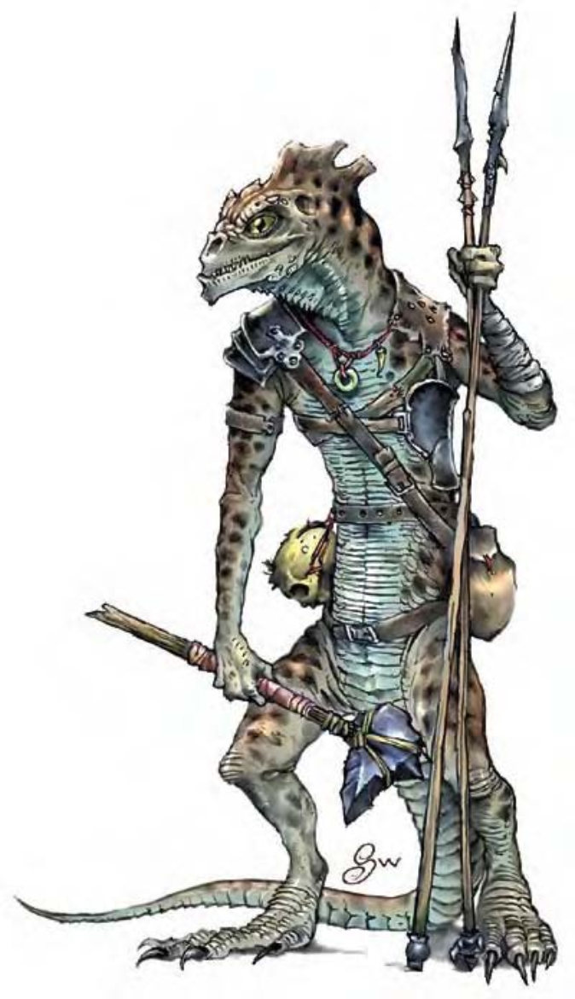

战蜥人是外观近似人形的爬虫类生物。身高比人类略矮，手臂瘦长但非常有力，可以用弯曲的双腿直立行走，背后拖了一条细长的尾巴。他们的头型和蜥蜴一样，从前额到脖子后方有一条皱褶状的肉突，眼睛深黑而有光泽。
战蜥人个性邪恶，几乎可以跟最坏的魔鬼相提并论。他们非常好战，而且喜欢吞吃对手的肉，尤其是人形生物。
战蜥人不算聪明，但勇猛好战和狡猾的天性还是可以弥补智力的缺憾。他们出没于在热温带，屠杀劫掠人形生物的聚落或商队。战蜥人对自己的巢穴保卫得极为严密，会主动攻击任何靠近的生物。
战蜥人身高约5英尺，重约150磅。战蜥人通晓龙语。
| 生命骰 | 2d8+4（13HP） |
| 先攻 | -1 |
| 速度 | 30英尺（6格） |
| 防御等级 | 15（-1敏捷、+6天生）、接触9、措手不及15 |
| 基本攻击/擒抱 | +1 / +1 |
| 攻击 | 木棒+1近战（1d6）；或爪抓+1近战（1d4）；或标枪+1远程（1d6） |
| 全力攻击 | 木棒+1近战（1d6）及爪抓-1近战（1d4）及啮咬-1近战（1d4）；或2爪抓+1近战（1d4）及啮咬-1近战（1d4）；或标枪+1远程（1d6） |
| 占据/触及 | 5英尺 / 5英尺 |
| 特殊攻击 | 散发恶臭 |
| 特殊能力 | 黑暗视觉90英尺 |
| 豁免 | 强韧+5、反射-1、意志+0 |
| 属性 | 力量10、敏捷9、体质14、智力8、感知10、魅力10 |
| 技能 | 躲藏+5*、聆听+3 |
| 专长 | 多重攻击B、专攻武器（标枪） |
| 环境 | 地底 |
| 组织 | 数尾（2-5）、中队（6-11，加上1-2只泽巨蜥）或一团（20-80，加上20%非战斗人员及3-13只泽巨蜥） |
| 宝藏 | 二分之一钱币、50%宝物、50%物品 |
| 阵营 | 通常混乱邪恶 |
| 进化 | 视人物职业而定 |
| 等级修正值 | +2 |
在战蜥人的队伍中，一半成员会携带木棒以及一两支标枪，其他就只能使用天生的爪和牙进行战斗。他们通常会躲在暗处，先投掷一阵标枪削弱敌人，然后再近身攻击。若战况不利，战蜥人会撤退并试图躲藏。
散发恶臭（特异）：发怒或受到惊扰时，战蜥人会分泌一种油腻并带有强烈气味的化学物质，几乎没有任何动物可以忍受这种恶臭。在战蜥人身边30英尺内的所有活物（战蜥人除外）都必须通过强韧检定（DC=13），否则就会陷入生病状态。豁免检定DC的调整值与体质调整值相同。通过检定的生物24小时内不会再受到同一只战蜥人散发的恶臭影响。「减缓毒性」或「中和毒性」法术可以解除生病状态。对毒素免疫的生物不会受到恶臭影响，对毒素具有抗力的生物在豁免检定上也具有加值。
技能：跟变色蜥蜴类似，战蜥人可以随环境变换皮肤的颜色，在进行「躲藏」检定时具有+4种族加值。*在以岩石为主或地底环境中，此项加值可以提升为+8。
战蜥人部落的领导者通常是最大最凶的那一只，也只有战功赫赫的成员才能担任干部。他们通常会把巢穴建在人形生物的聚落附近，便于猎捕居民或牲畜。战蜥人偏好在没有月光的黑夜出击，充分发挥天生具有的黑暗视觉和变色能力。
战蜥人非常喜欢铜制物品，虽然不会把值钱的东西放在身上，但巢穴里通常都有随地弃置的宝物，有时甚至堆在角落，和垃圾混在一起。战蜥人巢穴的构造多半是一个巨大的洞窟，旁边还有一些用来饲养幼体或孵蛋的小洞穴，幼体的数量大约是成年人口的五分之一，而蛋则是十分之一。
战蜥人信仰的神�o是涝戈札，外型介于蟾蜍和蜥蜴之间的邪神。
战蜥人人物具有下列种族特性：
― -2敏捷、+4体质、-2智力。
― 中型。
― 战蜥人的基本行走速度为30英尺。
― 黑暗视觉可达90英尺。
― 种族生命骰：战蜥人起始为2级人形生物，生命骰2d8、基本攻击加值+1，强韧、反射与意志的基本豁免检定则分别是+3、+0及+0。
― 种族技能：战蜥人的人形生物等级使他的技能点数成为5x（2+智力调整值，最小1）。他的本职技能为躲藏与聆听。战蜥人在进行「躲藏」技能检定时具有+4种族加值（在以岩石为主或地底环境中+8）。
― 种族专长：战蜥人的人形生物等级具有一个专长，另外具有额外专长「多重攻击」。
― +6天生防御加值。
― 天生武器：2爪抓（1d4）及啮咬（1d4）。
― 特殊攻击（见前文）：散发恶臭。
― 母语：龙语。额外语言：通用语、巨人语、地精语、兽人语。
― 适合职业：牧师。
― 等级修正值：+2。